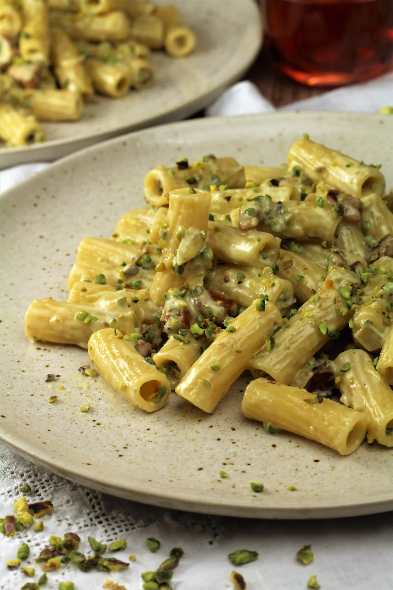

Sicilian Pasta

Description
A pasta that is creamy and crunchy, hitting the spot for an exciting yet simple dish.
Below is the list of ingredients and instructions on how to make this Sicilian pasta.
Ingredients
Main Ingredients
- 150 grams pancetta cut into small cubes
- 1 small onion finely diced
- ¾ cups chopped pistachios unsalted
- 2 cups heavy cream (or 35% cooking cream)
- 500 grams pasta penne, rigatoni or other of your choice
- 2 tbsp. grated Parmigiano
Instructions
- Place the chopped pistachios in a dry pan and toast them until fragrant.
- Bring a large pot of salted water to a boil. Cook pasta until very al dente, about 2 minutes less than the suggested cooking time. Reserve some of the cooking water.
- Meanwhile, heat a skillet large enough to hold the pasta, on medium high heat. Add the cubed pancetta and cook, stirring, until it has rendered it's fat and is crisp, about 5 minutes. Transfer the pancetta to a bowl.
- Add the diced onion to the pan. Cook until soft, about 3 minutes. Stir in about 1/2 of the crushed pistachios and stir to coat.
- Pour in the cooking cream and cook on medium heat for 1 minute.
- Drain the pasta and add to the skillet. Stir in the reserved pancetta and toss to coat the pasta in the cream sauce.
- Add 2 tbsp. of grated cheese to create a creamier consistency. If the sauce is too thick, add a ladle or two of pasta water to thin it as necessary
- Serve immediately garnished with the remaining chopped pistachios and extra grated cheese at the table.